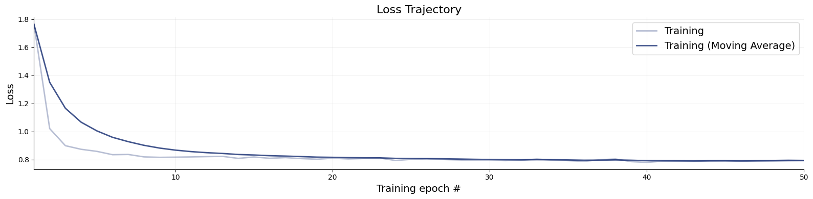
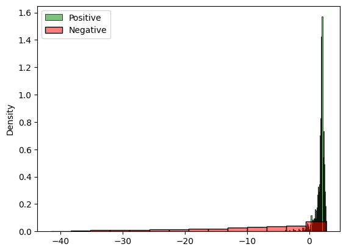
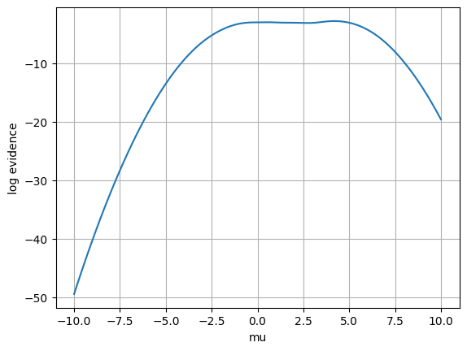
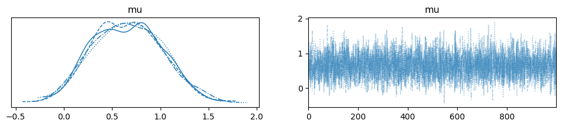

12. Neural Likelihood-to-Evidence Ratio Estimation#
Authors: Paul Bürkner, Lars Kühmichel, Stefan T. Radev
12.1. Introduction#
In this notebook, we will explain how to perform likelihood-to-evidence ratio estimation using the NRE-C method of Miller et al. (2022; https://arxiv.org/abs/2210.06170). Since the likelihood-to-evidence ratio is proportional to the likelihood, we can use estimates of the former as replacement of the likelihood in self-normalizing sampling procedures, for example, in MCMC. Compared to full likelihood estimation, likelihood-to-evidence ratio estimation just requires a simple classification network for estimation, not a generative network.
import bayesflow as bf
import keras
import numpy as np
import matplotlib.pyplot as plt
import seaborn as sns
from scipy.stats import norm
WARNING:bayesflow:Multiple Keras-compatible backends detected (JAX, PyTorch, TensorFlow).
Defaulting to JAX.
To override, set the KERAS_BACKEND environment variable before importing bayesflow.
See: https://keras.io/getting_started/#configuring-your-backend
INFO:2026-02-28 21:36:22,781:jax._src.xla_bridge:834: Unable to initialize backend 'tpu': UNIMPLEMENTED: LoadPjrtPlugin is not implemented on windows yet.
INFO:jax._src.xla_bridge:Unable to initialize backend 'tpu': UNIMPLEMENTED: LoadPjrtPlugin is not implemented on windows yet.
INFO:bayesflow:Using backend 'jax'
12.2. Generative Model#
We will use a simple normal means model as an example. Let the (unknown) mean be \(\theta \in \mathbb{R}\), and assume i.i.d. observations $\( x_i \mid \theta \sim \mathcal{N}(\theta, \sigma^2), \quad i=1,\dots,N, \)\( with known \)\sigma\(. We also place a prior on \)\theta \sim p(\theta)\( (\)\text{e.g. } \mathcal{N}(0,\tau^2)$), but this “prior” simply determines the validity scope of the ratio estimator.
Our goal is Bayesian inference for \(\theta\) given data \(x_{1:n}\), but we will approach it via neural ratio estimation (NRE). Concretely, we will use contrastive neural ratio estimation (NRE-C), which learns the likelihood-to-evidence ratio $\( r(\theta, x) \;=\; \frac{p(x\mid \theta)}{p(x)} \)\( by training a classifier on simulated pairs \)(\theta, x)$. NRE-C is a multiclass/contrastive formulation designed to avoid the bias term issues that can arise in earlier multiclass NRE variants ()
Concretely, we simulate from the model:
Sample \(\theta \sim p(\theta)\)
Sample \(x \sim p(x\mid \theta)\)
Then we train a neural network \(s_\phi(\theta, x)\) so that at optimum it recovers the log-ratio (up to the usual equivalences of the method): $\( s_\phi(\theta, x) \approx \log r(\theta, x). \)$
Once we have \(\hat r_\phi(\theta, x) = \exp(s_\phi(\theta, x))\), we can form an approximate posterior via $\( p(\theta\mid x) \propto p(\theta)\,\hat r_\phi(\theta, x). \)$
A very convenient feature in the i.i.d. setting is that the ratio factorizes across observations: $\( \hat{r}(\theta, x_{1:n}) = \frac{p(x_{1:n}\mid \theta)}{p(x_{1:n})} = \prod_{i=1}^n \frac{p(x_i\mid \theta)}{p(x_i)} = \prod_{i=1}^n \hat{r}(\theta, x_i). \)\( Taking logs gives the additive form: \)\( \log \hat{r}(\theta, x_{1:n}) = \sum_{i=1}^n \log \hat{r}(\theta, x_i). \)$
Thus, training can be done with cheap single-observation simulations, and inference for larger datasets is just a sum of per-observation network outputs.
12.3. Reference (NRE-C)#
Miller, B. K., Weniger, C., & Forré, P. (2022). Contrastive Neural Ratio Estimation for Simulation-based Inference. NeurIPS 2022, arXiv:2210.06170.
def prior():
mu = np.random.uniform(-10, 10)
return {"mu": mu}
def likelihood(mu):
return {"x": mu + np.random.standard_normal()}
simulator = bf.make_simulator([prior, likelihood])
test_sims = simulator.sample(3)
for k, v in test_sims.items():
print(k, v.shape)
mu (3, 1)
x (3, 1)
12.4. Approximator#
The RatioApproximator, which implements NRE-C, requires two key variables from the simulator: inference_variables, containing the model parameters (here only mu), and inference_conditions, containing the observables (here only x). For convenience, we adapt the simulation outputs with the default adapter.
adapter = bf.approximators.RatioApproximator.build_adapter(
inference_variables=["mu"],
inference_conditions=["x"]
)
We initialize and fit a RatioApproximator in pretty much the same way as we do with other approximators in BayesFlow. One important detail is that we don’t have an inference_network but a classifier_network, which can be a simple as an MLP. We could additionally specify a summary_network to summarize the observables before passing them to classifier_network, but for this simple example, we are completely fine without summary_network.
ratio_approximator = bf.approximators.RatioApproximator(
adapter=adapter,
inference_network=bf.networks.MLP(widths=[64, 64]),
standardize=None
)
ratio_approximator.compile(optimizer="adam")
history = ratio_approximator.fit(
simulator=simulator,
epochs=50,
num_batches=200,
batch_size=32
)
INFO:bayesflow:Building dataset from simulator instance of SequentialSimulator.
INFO:bayesflow:Using 20 data loading workers.
INFO:bayesflow:Building on a test batch.
Epoch 1/50
200/200 ━━━━━━━━━━━━━━━━━━━━ 2s 3ms/step - loss: 1.7638
Epoch 2/50
200/200 ━━━━━━━━━━━━━━━━━━━━ 1s 2ms/step - loss: 1.0208
Epoch 3/50
200/200 ━━━━━━━━━━━━━━━━━━━━ 1s 2ms/step - loss: 0.8989
Epoch 4/50
200/200 ━━━━━━━━━━━━━━━━━━━━ 1s 2ms/step - loss: 0.8732
Epoch 5/50
200/200 ━━━━━━━━━━━━━━━━━━━━ 1s 2ms/step - loss: 0.8585
Epoch 6/50
200/200 ━━━━━━━━━━━━━━━━━━━━ 0s 2ms/step - loss: 0.8347
Epoch 7/50
200/200 ━━━━━━━━━━━━━━━━━━━━ 0s 2ms/step - loss: 0.8364
Epoch 8/50
200/200 ━━━━━━━━━━━━━━━━━━━━ 0s 2ms/step - loss: 0.8191
Epoch 9/50
200/200 ━━━━━━━━━━━━━━━━━━━━ 1s 2ms/step - loss: 0.8159
Epoch 10/50
200/200 ━━━━━━━━━━━━━━━━━━━━ 1s 3ms/step - loss: 0.8171
Epoch 11/50
200/200 ━━━━━━━━━━━━━━━━━━━━ 1s 2ms/step - loss: 0.8189
Epoch 12/50
200/200 ━━━━━━━━━━━━━━━━━━━━ 0s 2ms/step - loss: 0.8211
Epoch 13/50
200/200 ━━━━━━━━━━━━━━━━━━━━ 1s 2ms/step - loss: 0.8229
Epoch 14/50
200/200 ━━━━━━━━━━━━━━━━━━━━ 1s 2ms/step - loss: 0.8084
Epoch 15/50
200/200 ━━━━━━━━━━━━━━━━━━━━ 0s 2ms/step - loss: 0.8184
Epoch 16/50
200/200 ━━━━━━━━━━━━━━━━━━━━ 0s 2ms/step - loss: 0.8090
Epoch 17/50
200/200 ━━━━━━━━━━━━━━━━━━━━ 1s 2ms/step - loss: 0.8140
Epoch 18/50
200/200 ━━━━━━━━━━━━━━━━━━━━ 1s 2ms/step - loss: 0.8072
Epoch 19/50
200/200 ━━━━━━━━━━━━━━━━━━━━ 0s 2ms/step - loss: 0.8024
Epoch 20/50
200/200 ━━━━━━━━━━━━━━━━━━━━ 0s 2ms/step - loss: 0.8099
Epoch 21/50
200/200 ━━━━━━━━━━━━━━━━━━━━ 0s 2ms/step - loss: 0.8047
Epoch 22/50
200/200 ━━━━━━━━━━━━━━━━━━━━ 0s 2ms/step - loss: 0.8078
Epoch 23/50
200/200 ━━━━━━━━━━━━━━━━━━━━ 1s 2ms/step - loss: 0.8112
Epoch 24/50
200/200 ━━━━━━━━━━━━━━━━━━━━ 1s 3ms/step - loss: 0.7935
Epoch 25/50
200/200 ━━━━━━━━━━━━━━━━━━━━ 1s 3ms/step - loss: 0.8015
Epoch 26/50
200/200 ━━━━━━━━━━━━━━━━━━━━ 1s 3ms/step - loss: 0.8052
Epoch 27/50
200/200 ━━━━━━━━━━━━━━━━━━━━ 1s 3ms/step - loss: 0.8006
Epoch 28/50
200/200 ━━━━━━━━━━━━━━━━━━━━ 1s 2ms/step - loss: 0.7976
Epoch 29/50
200/200 ━━━━━━━━━━━━━━━━━━━━ 0s 2ms/step - loss: 0.7939
Epoch 30/50
200/200 ━━━━━━━━━━━━━━━━━━━━ 0s 2ms/step - loss: 0.7942
Epoch 31/50
200/200 ━━━━━━━━━━━━━━━━━━━━ 1s 2ms/step - loss: 0.7927
Epoch 32/50
200/200 ━━━━━━━━━━━━━━━━━━━━ 0s 2ms/step - loss: 0.7949
Epoch 33/50
200/200 ━━━━━━━━━━━━━━━━━━━━ 1s 2ms/step - loss: 0.8038
Epoch 34/50
200/200 ━━━━━━━━━━━━━━━━━━━━ 0s 2ms/step - loss: 0.7960
Epoch 35/50
200/200 ━━━━━━━━━━━━━━━━━━━━ 0s 2ms/step - loss: 0.7926
Epoch 36/50
200/200 ━━━━━━━━━━━━━━━━━━━━ 1s 3ms/step - loss: 0.7873
Epoch 37/50
200/200 ━━━━━━━━━━━━━━━━━━━━ 1s 3ms/step - loss: 0.7983
Epoch 38/50
200/200 ━━━━━━━━━━━━━━━━━━━━ 1s 3ms/step - loss: 0.8043
Epoch 39/50
200/200 ━━━━━━━━━━━━━━━━━━━━ 1s 3ms/step - loss: 0.7854
Epoch 40/50
200/200 ━━━━━━━━━━━━━━━━━━━━ 1s 3ms/step - loss: 0.7800
Epoch 41/50
200/200 ━━━━━━━━━━━━━━━━━━━━ 1s 3ms/step - loss: 0.7886
Epoch 42/50
200/200 ━━━━━━━━━━━━━━━━━━━━ 1s 3ms/step - loss: 0.7893
Epoch 43/50
200/200 ━━━━━━━━━━━━━━━━━━━━ 1s 3ms/step - loss: 0.7872
Epoch 44/50
200/200 ━━━━━━━━━━━━━━━━━━━━ 1s 2ms/step - loss: 0.7924
Epoch 45/50
200/200 ━━━━━━━━━━━━━━━━━━━━ 1s 2ms/step - loss: 0.7922
Epoch 46/50
200/200 ━━━━━━━━━━━━━━━━━━━━ 1s 2ms/step - loss: 0.7880
Epoch 47/50
200/200 ━━━━━━━━━━━━━━━━━━━━ 1s 3ms/step - loss: 0.7920
Epoch 48/50
200/200 ━━━━━━━━━━━━━━━━━━━━ 1s 3ms/step - loss: 0.7932
Epoch 49/50
200/200 ━━━━━━━━━━━━━━━━━━━━ 1s 3ms/step - loss: 0.7966
Epoch 50/50
200/200 ━━━━━━━━━━━━━━━━━━━━ 0s 2ms/step - loss: 0.7940
f = bf.diagnostics.plots.loss(history)

The amount of online simulations we used for training was probably quite a bit of an overkill and we would have gotten away with good results also with fewer simulations.
12.5. Results#
Let’s perform an initial check of the approximator’s results by comparing the log_ratio estimates of matching vs. non-matching (mu, x) pairs. If our ratio approximator has been learning correctly, the matching pairs should have much higher ratios than the non-matching pairs.
sims = simulator.sample(1000)
contrastive_sims = {
"mu": sims["mu"][::-1],
"x": sims["x"]
}
log_ratio_positive = keras.ops.convert_to_numpy(ratio_approximator.log_ratio(sims))
log_ratio_negative = keras.ops.convert_to_numpy(ratio_approximator.log_ratio(contrastive_sims))
f, ax = plt.subplots(1, 1)
sns.histplot(log_ratio_positive, stat="density", ax=ax, label="Positive", color="green", alpha=0.5)
sns.histplot(log_ratio_negative, stat="density", ax=ax, label="Negative", color="red", alpha=0.5)
ax.legend()
<matplotlib.legend.Legend at 0x1d9c47b6960>

Based on the above histogram, this needs seems to be the case, which is a first sanity check that what the approximator learned goes in the right direction. Let’s perform some further tests.
Upon perfect learning of the likelihood-to-evidence ratio, the difference of the log likelihood and the log likelihood-to-evidence ratio should be constant (= log evidence) for any fixed observation. In simple cases, such as our normal means model, we have the analytic likelihood available, so we can easily verify this property. In reality, we of course usually only do likelihood-to-evidence ratio estimation if we don’t actually have the likelihood available. Accordingly, bespoke check is more to verify the correctness of the general implementation rather than a practical real-world diagnostic.
def log_lik(x, mu):
return norm.logpdf(x.squeeze(), loc=mu.squeeze(), scale=1)
We can check the estimated values of the log evidence for any dataset. Here, we simply choose x=2 and evaluate the log evidence for equally space values of mu between -6 and 6, which covers most of the prior range.
mu = np.linspace(-10, 10, 100)[:, np.newaxis]
x_obs = np.array([2])
x_obs_batched = np.repeat(x_obs[np.newaxis, :], mu.shape[0], axis=0)
sims_x_obs = dict(x=x_obs_batched, mu=mu)
ll = log_lik(x_obs_batched, mu)
lr = ratio_approximator.log_ratio(sims_x_obs)
le = ll - lr
plt.plot(mu, le)
plt.xlabel('mu')
plt.ylabel('log evidence')
plt.grid(True)
plt.show()

The plot indicates that, for most values of the parameter mu, the estimated log evidence is indeed roughly the same. However, for parameter values that are quite unlikely to have generated x=2, we see some deviation, indicating that the ratio approximator has not yet sufficiently converged there. This is because, during training, these combinations of mu and x were never seen, so they are out-of-distribution for the ratio approximator, which hence becomes inaccurate there.
12.6. MCMC with NRE#
We can easily plug our likelihood-to-evidence ratio approximation into PyMC to run MCMC. This just requires writing a small wrapper around our neural approximator so the input and output structures matches thoses expected by PyMC.
import pymc as pm
import pytensor.tensor as pt
from pytensor.graph import Op, Apply
class RatioOp(Op):
"""
Op for likelihood-to-evidence approximator: computes p(x|theta) / p(x)
"""
def __init__(self, ratio_approximator, x_obs):
"""
ratio_approximator: trained ratio approximator
x_obs: vector of observations
"""
self.approximator = ratio_approximator
self.x_obs = x_obs
def make_node(self, mu):
mu = pt.as_tensor_variable(mu)
return Apply(self, [mu], [pt.dscalar()])
def perform(self, node, inputs, outputs):
mu = inputs[0]
# broadcast mu to the shape of x_obs
mu = np.repeat(mu[np.newaxis, :], self.x_obs.shape[0], axis = 0)
data = dict(x = self.x_obs, mu = mu)
# results in a vector of log_ratio values; one per element of x_obs
log_ratio = self.approximator.log_ratio(data)
outputs[0][0] = np.asarray(np.sum(log_ratio, axis=0), dtype='float64')
INFO:arviz.preview:arviz_base not installed
INFO:arviz.preview:arviz_stats not installed
INFO:arviz.preview:arviz_plots not installed
We instantiate our ratio likelihood with a simulated dataset of 10 observations, all generated by the same true value of mu.
x_obs_vector = simulator.sample(10, mu=1)["x"]
ratio_op = RatioOp(ratio_approximator, x_obs=x_obs_vector)
We can now incorporate the ratio likelihood for the given data into a PyMC model and use basic likelihood-based samplers such as slice sampling.
If we additionally specified a gradient – which we could with the ratio approximator – we could even run advanced MCMC algorithms such as Hamiltonian Monte Carlo (HMC) with NUTS.
For demonstration purposes here, slice sampling is sufficient. We use weakly informative priors below, to better check the effect of the ratio approximator on the resulting posterior. Since the likelihood-to-evidence ratio is independent of the prior, we can use different priors in training and during MCMC inference, something that is not immediate in direct neural posterior estimation.
with pm.Model() as model:
mu = pm.Normal('mu', mu=0, sigma=10, shape=1)
log_likelihood = ratio_op(mu)
pm.Potential('log_likelihood', log_likelihood)
trace = pm.sample(1000, step=pm.Slice(), chains=4, cores=1)
INFO:pymc.sampling.mcmc:Sequential sampling (4 chains in 1 job)
INFO:pymc.sampling.mcmc:Slice: [mu]
INFO:pymc.sampling.mcmc:Sampling 4 chains for 1_000 tune and 1_000 draw iterations (4_000 + 4_000 draws total) took 93 seconds.
import arviz
arviz.plot_trace(trace)
array([[<Axes: title={'center': 'mu'}>, <Axes: title={'center': 'mu'}>]],
dtype=object)

MCMC sampling took just a few seconds and the estimation posterior looks reasonable. We further verify the posterior’s accuracy by comparing it with empirical moments directly obtained from the observed data. Since we used a simple normal means model and uninformative priors, the true posterior mean of mu is essentially the empirical mean of the data. The same goes for the posterior standard deviation of mu, which is essentially the empirical standard error of the observed data mean. Of course, these special relationships only hold for this simple model.
print(np.mean(trace["posterior"]["mu"]))
print(np.std(trace["posterior"]["mu"]))
<xarray.DataArray 'mu' ()> Size: 8B
array(0.65915859)
<xarray.DataArray 'mu' ()> Size: 8B
array(0.35842967)
print(np.mean(x_obs_vector))
print(np.std(x_obs_vector) / np.sqrt(x_obs_vector.shape[0]))
0.70156017896759
0.32138566631847604
Indeed, MCMC posterior and empirical estimates match well, providing further evidence that our likelihood-to-evidence ratio approximation has been successful.